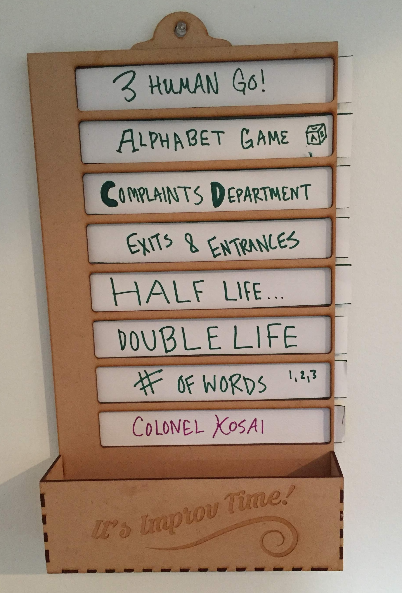
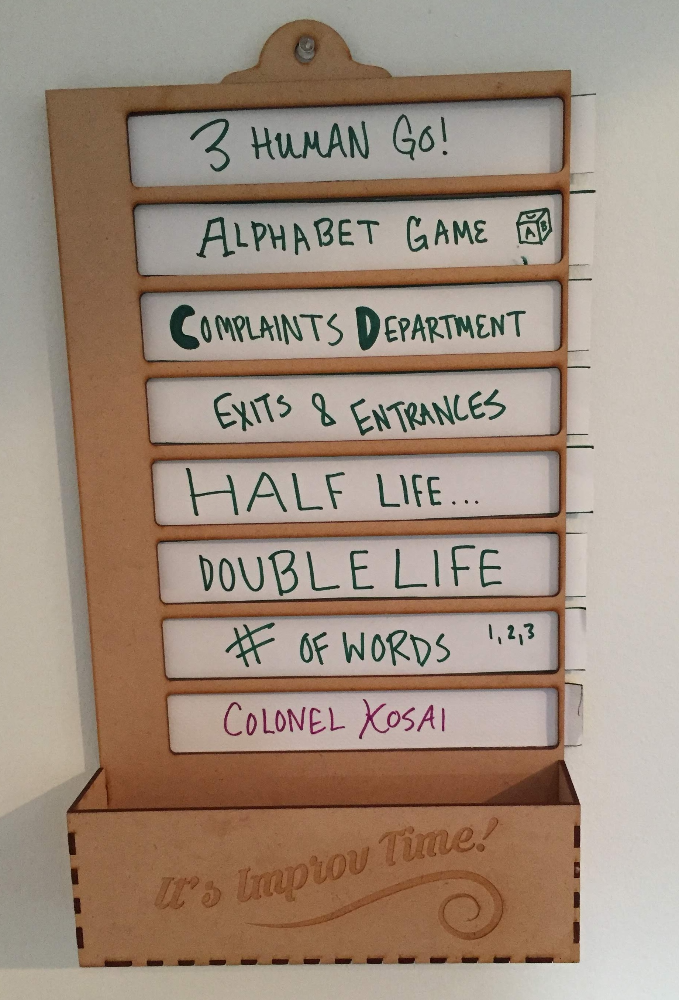
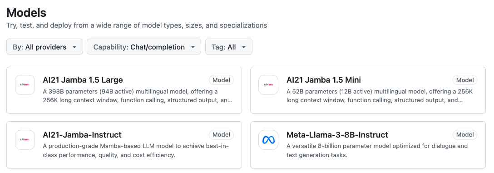

Playing improv
...with Python?
pamelafox.github.io/improv-with-python/
About me

Python Cloud Advocate at Microsoft
Formerly: UC Berkeley, Khan Academy, Woebot, Coursera,Google
Find me online at:
| Mastodon | @pamelafox@fosstodon.org |
| @pamelafox | |
| GitHub | www.github.com/pamelafox |
| Website | pamelafox.org |
Discovering improv
My first improv?
 https://blog.pamelafox.org/2015/04/towards-more-yes-ands-and-less-buts.html
https://blog.pamelafox.org/2015/04/towards-more-yes-ands-and-less-buts.html
Reading about Improv

Impro: Improvisation and the Theatre
Keith Johnstone

So Many Improv Classes
Spreading improv
Running an improv club
Bringing improv to work
Our afternoon "shake-off" at Woebot:
 https://www.latimes.com/business/technology/la-fi-tn-woebot-20170823-htmlstory.html
https://www.latimes.com/business/technology/la-fi-tn-woebot-20170823-htmlstory.html
Laser cutting for improv

 

Documenting improv
improv listsImprov games
Flavors of improv games
Let's play an improv game!
Playing improv with Python
Can we play improv games with a computer?
We need the computer to generate a creative human-like response.
Possible tools:
- Hidden markov models
- Custom trained ML models
- Large/Small Language Models
Language Models
Let's try these models...
| Company | Model | Parameters | Host |
|---|---|---|---|
| OpenAI | gpt-4o-mini | ?? | OpenAI.com/Azure/GitHub Models |
| Meta | Llama3.1 | 8B, 70B, 405B | Azure/GitHub Models/Ollama |
| Microsoft | Phi3 | 3.8B, 14B | Azure/GitHub Models/Ollama |
| Mistal | Mistral small | ?? | Azure/GitHub Models/Ollama |
Ollama
Ollama is a tool for easily running local LLMs on your computer.

You can also run it from GitHub Codespaces: üîó aka.ms/ollama-python: Ollama Python Playground
GitHub Models
GitHub models are freely available models with very low rate limits, designed for easy experimentation with no signup.
☹️ Currently waitlist only. Sign up now!
Improv with chat completion models
General approach:
messages = [
{"role": "system",
"content": "You are playing an improv game to tell a story."
},
{"role": "user",
"content": "Once upon a time, unicorns and ponies were friends."
},
{"role": "user",
"content": "Generate the next sentence in the story:"
}
]
Game: Story Spine
Let's start easy!
Rules: Game: Group Story Spine
Code: storyspine.py
Takeaways:
- Different models, different results
- Some models are very wordy
- Some models are very repetitive
- It's fun to mix/match models and users
Game: Sentence-at-a-time Story
AKA: Will the language model ever end the story?
Rules: Sentence-at-a-time-Story.md
Code: sentenceatatime.py
Game: Word-at-a-time Story
AKA: Why can't language models count?
Rules: Word-at-a-time-Story.md
Code: wordatatime.py
Approaches:
- Few shot learning
- Post-processing
- Fine-tuning
Game: Yes, And Product Factory
AKA: Can we use props??
Rules: Yes,And-Product-Factory.md
Code: yesandproduct.py
Yes, with multimodal models!
Three Things!
AKA: Can we make lists??
Rules: 3-Things!.md
Code: threethings_simple.py
Yes, but if we need an exact list, we can use function calling,
as long as the model supports it.
Ollama blog post: Tool support for language models
Especially for small language models, we can add few-shot examples to increase likelihood of syntactically correct responses
Langchain log post: Few-shot prompting to improve tool calling performance
Other options:
- Instructor for structured outputs
- Outlines for JSON outputs
- Structured Outputs from OpenAI (Not yet supported in Ollama)
Lessons learned
- Larger models are better at following the rules
- Doing *anything* with language models teaches you a lot about them
- Improv with computers is fun!
- Improv with humans is more fun!